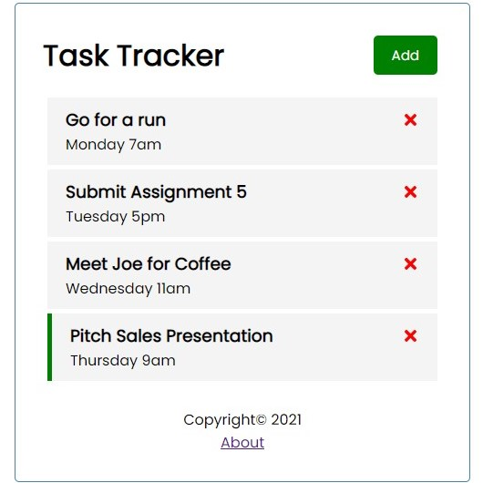

react js project
For this project, I once again use React JS (because it's amazing) and JSON server as a backend database to run this task tracker and save tasks.
At a glance the user can view all the tasks they need to complete as well as the day and time they are due.
Users can also add a new task to the task tracker, which simply requires the user to enter the task, the day and time, as well as whether they wish to set a reminder on the task. The tasks with the 'Set Reminder' flag have a green bar next to them.
When all the tasks have been completed or deleted, the screen will simply display the text 'No Tasks to Show'.
Last but not least, there is an About section users can click on.
The about section may appear to take users to another page, but in reality users never leave the home page. Instead, we use a library called 'React Router DOM', which simulates different webpages, including change the link address to display the different page addresses such as '/about'.